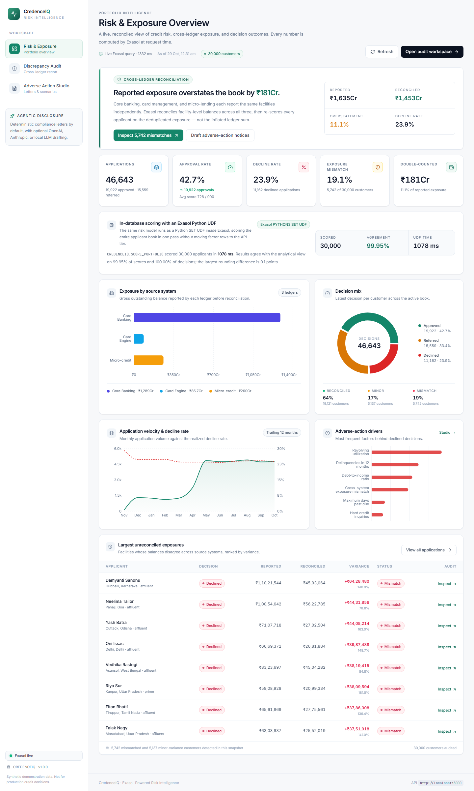
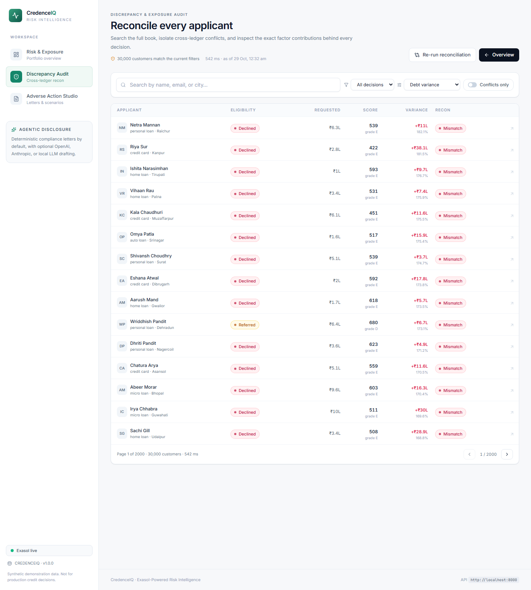
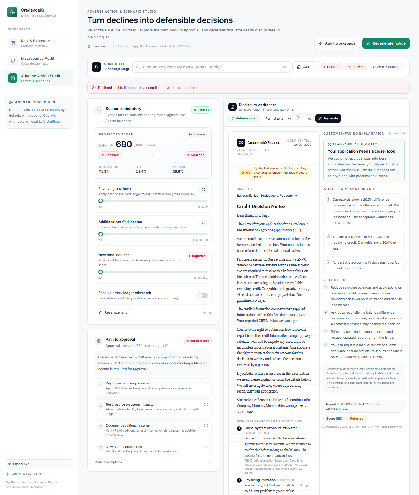

Exasol Hackathon · 2026
Credit decisions
you can defend.
CredenceIQ reconciles conflicting credit exposure, re-scores applicants inside Exasol, and turns declines into regulator-ready disclosure drafts — with a full audit trail from portfolio number to factor-level reason.

The problem
The book doesn’t agree with itself.
Three ledgers, one borrower
Core banking, card management, and micro-credit each report the same facility independently — often with different outstanding balances.
Exposure is overstated
Double counting inflates the book, distorts utilisation and DTI, and pushes good applicants below the approval line.
Declines arrive without a defence
A score is not a reason. Lenders need principal factors, appeal rights, and a grievance route the customer can act on.
Seeded demo book: 30,000 customers · 115,733 exposures · 46,643 applications.
The solution
One reconciled credit 360 — inside the database.
Every analytical step runs in Exasol. The API shapes responses; it does not recompute the book in Python.
Reconcile
V_RECONCILED_CREDIT_360 deduplicates facilities across core banking, cards, and micro-credit, then derives variance, utilisation percentiles, and a transparent score.
Re-score
One weight table drives three execution paths: the Python API, the SQL view, and a generated PYTHON3 SET UDF that scores all 30,000 applicants in-database.
Respond
Generate a formal adverse-action notice and a plain-English companion with factor disclosures, appeal rights, and the exact path back to approval.
The product
A workspace for risk, audit, and compliance.
Risk & exposure
Reconciled KPIs, decision mix, rejection velocity, denial drivers, and the largest unresolved exposures.

Discrepancy audit
Search the book, isolate conflicts, compare historical vs. re-scored decisions, and open the Applicant 360 drawer.

Adverse-action studio
Re-score a file live, explore the path to approval, and generate the formal notice plus plain-English explanation.
Architecture
Built around Exasol, not on top of it.
7 tables · 115,733 facility rows · 46,643 applications
V_RECONCILED_CREDIT_360 · facility dedupe · variance · score
SCORE_PORTFOLIO · Python SET UDF · 30,000 rows in ~0.7 s
ADVERSE_ACTION_REPORTS · persisted notices and generation metadata
Performance
400 round-trips → one set-based pass.
The same 100-customer reconciled result, composed two ways over the same Exasol data. One set-based credit-360 query replaces four hundred sequential round-trips.
| Path | Round-trips | Median | ms / customer |
|---|---|---|---|
| Per-customer N+1 | 400 | 5,244.7 ms | 52.4 |
| Single set-based pass | 1 | 53.8 ms | 0.5 |
| Portfolio aggregate scan | 1 | 131.7 ms | — |
Compliance by design
Explainability is a regulatory requirement.
Every decline carries
Citations verified against official sources
Anatomy of a generated notice
Persisted with provider, model, mode, and factor payloadIndia localisation
Built for the Indian lending stack.
“Our records show a 9.4% difference between systems for the same account. We are required to resolve this before relying on the balance. The acceptable variance is 2.0% or less.”
Why it matters
Less reconciliation. More defensible decisions.
Risk teams
One reconciled view of the book. Re-score the entire portfolio in the database instead of stitching four queries per customer.
Compliance
Consistent reason codes, factor evidence, appeal rights, and a persisted audit trail for every notice generated.
Borrowers
Clear reasons, the figures behind them, and a documented path back to approval — including the exact paydown gap.
Next: bureau and Account Aggregator connectors · model governance and drift monitoring · multi-tenant lender deployment · configurable notice templates.
Success metrics: reconciliation coverage · mismatch resolution time · notice generation latency · appeal and override rate.
Run it locally
The whole book is reproducible.
Exasol Personal, a deterministic seed, and two app processes. The README has the full quickstart and the fallback path.
# 1 · database exakit start exakit status # 2 · deterministic book python seed_data.py --if-empty --customers 30000 # 3 · API + dashboard uvicorn app.main:app --port 8000 npm run dev